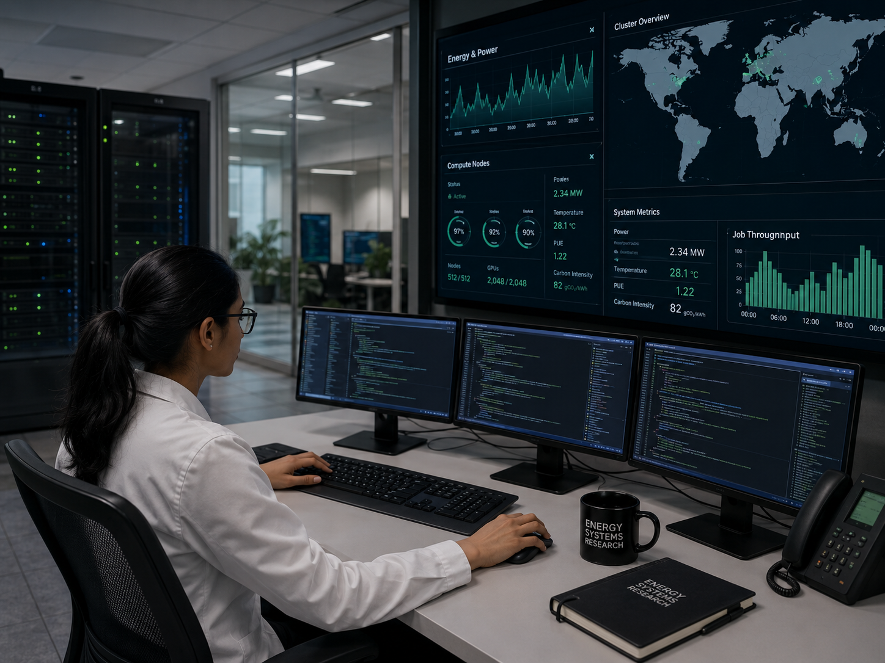
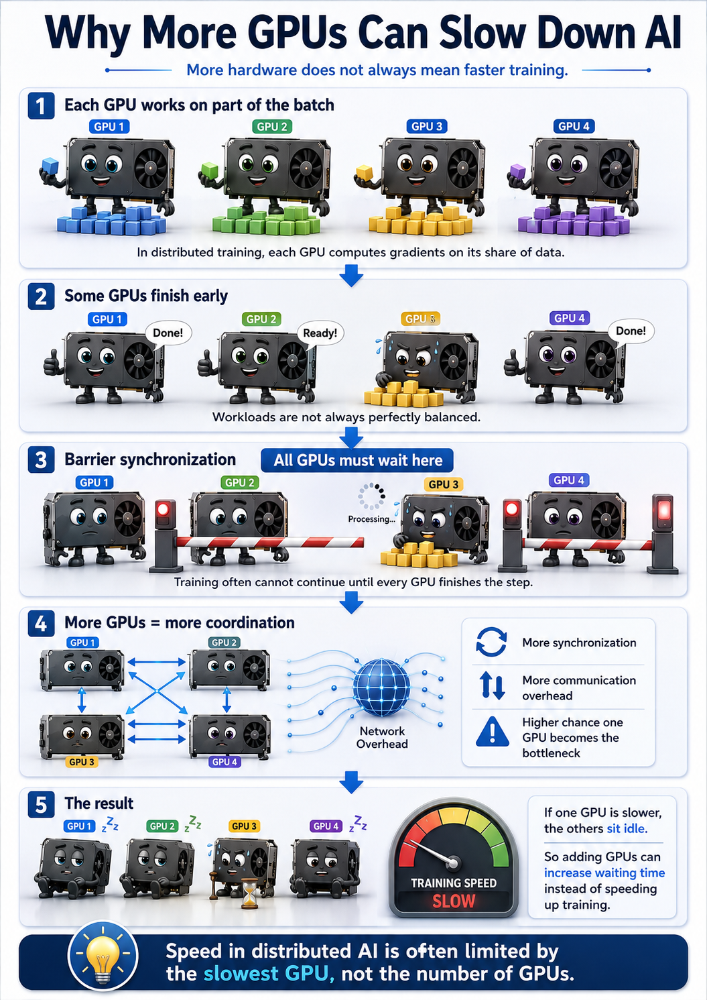
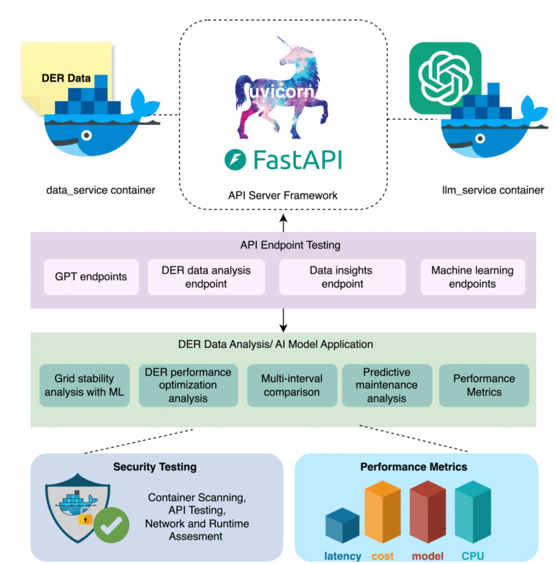
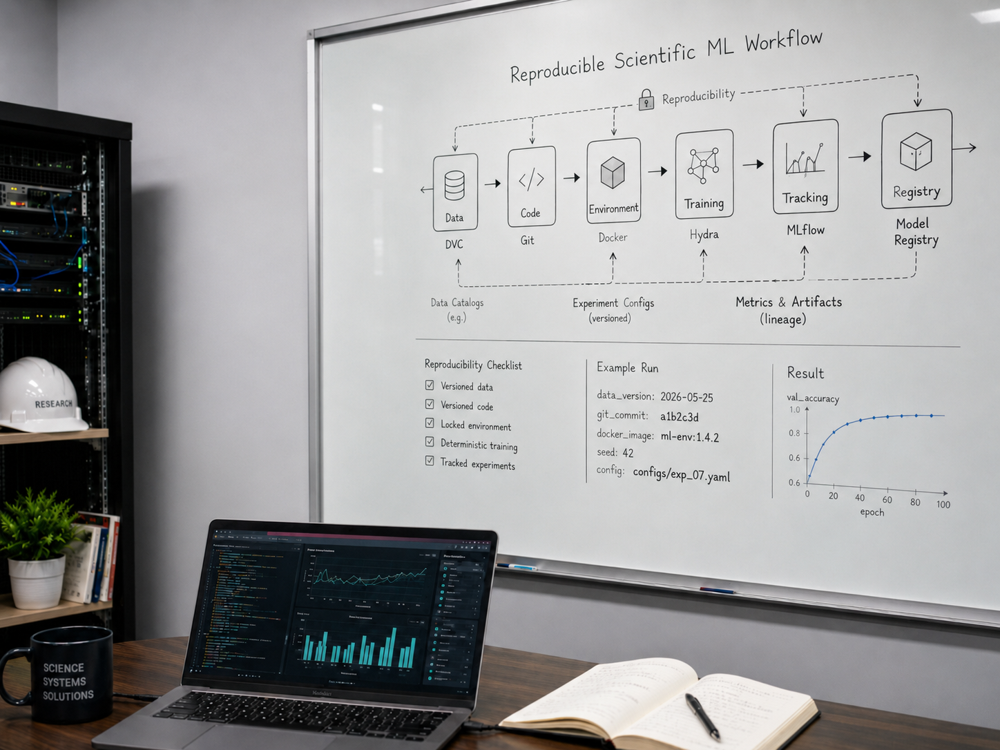
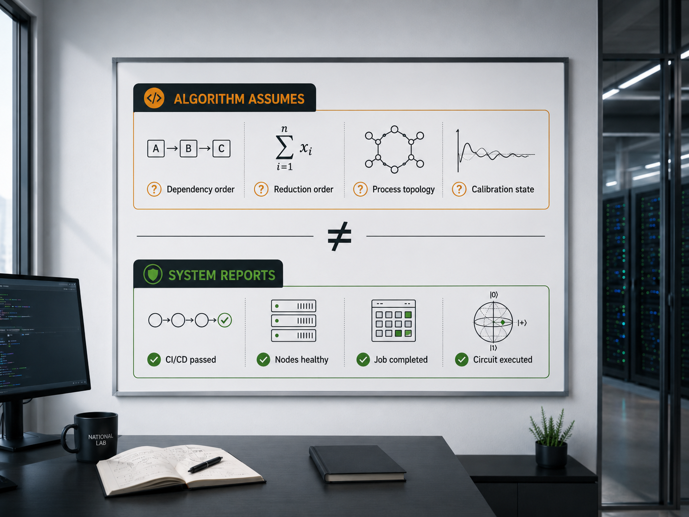
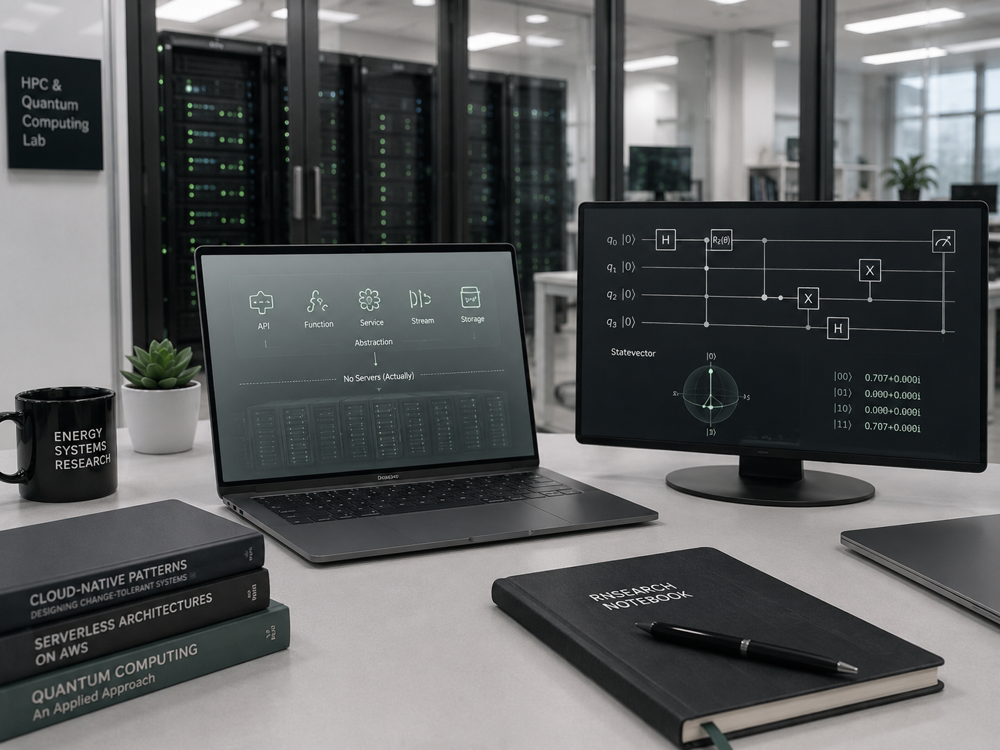

Notes on scientific AI infrastructure, HPC integrated workflows, reproducibility in machine learning, and energy systems research. Written for practitioners and researchers who work at the intersection of computation and physical systems.





